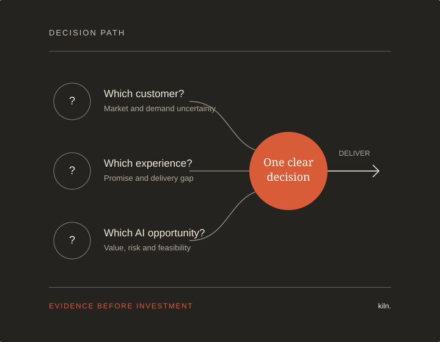

Quick Diagnostic
Pressure-test one important question and identify the evidence still missing.
45 minutes · €250 excl. VAT Start here →Independent product decision partner
For established service businesses facing an important AI, digital product or customer experience decision.

Choose by situation
You do not need to diagnose the service you need. Start with the decision that is not moving.
The Kiln approach
Three ways to start
Start small. Expand only when the evidence supports it.
Pressure-test one important question and identify the evidence still missing.
45 minutes · €250 excl. VAT Start here →Build the evidence, business logic and working proof needed for an investment decision.
2–4 weeks · from €6,000 excl. VAT See the sprint →Lead the chosen direction into delivery without adding a full-time executive role.
1–2 days/week · from €1,100/day excl. VAT See the working model →Inspect the work
Change a business assumption and watch the scenario, operating view and recommendation update. Synthetic data; transparent browser-based rules.
Recommended decision
Why Kiln
Enterprise-tested judgment
Complex stakeholders, commercial constraints and cross-market delivery.
Hands-on product evidence
Research, business case, proposition, prototype and measurement.
No automatic AI answer
AI, automation, conventional digital change—or a clear decision not to build.
Send the decision, the deadline and what is making it difficult. You will receive the smallest useful starting point.
Email Somin